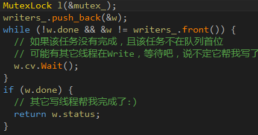
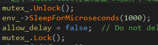
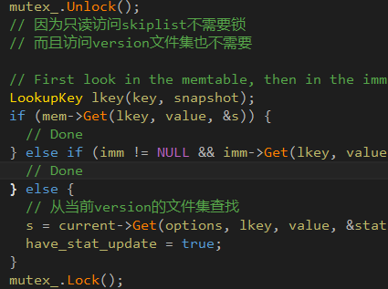
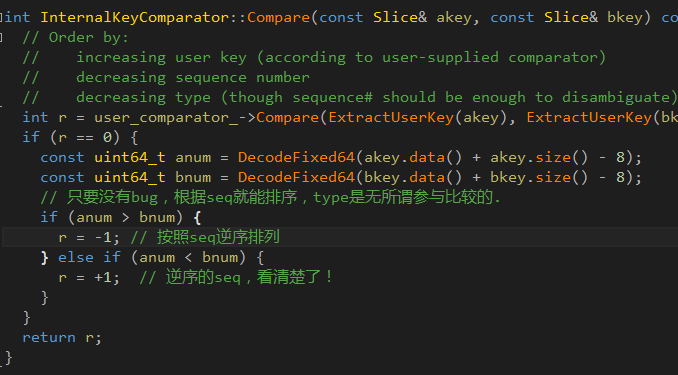

##引言
leveldb已经有5年的历史，那些介绍性的废话就省略吧，直接带着问题奔向主题。
##1.多线程写入是如何实现的？
DbImpl内部维护了一个请求队列（writers_），写线程互斥访问这个队列，并将请求push到队列尾部：

现在看一下为什么writer线程可能会帮其它writer线程完成写请求：
由于leveldb实际是将数据写入内存中的memtable，在memtable占用内存过高时需要将数据持久化到文件以释放内存，writer线程会调用MakeRoomForWrite做检测。冻结占用内存过高的memtable，并生成一个新的memtable供写入，而刚才冻结的memtable由一个后台compact线程dump到Level0层文件集。当有大量写操作，可能会使得level0文件数量增加很多（默认是8个文件），会导致writer睡眠1毫秒：

所以后续writer在push了自己的请求之后，发现不在队列头部，那就等吧，前面会有人处理的。
（level0文件仅仅是内存memtable到磁盘文件的一个中转，所以level0文件内有序但文件之间key可能重叠，文件数越多读性能下降越厉害。而其它更老的level由于合并操作，文件之间key是不会重叠的）
##2.一次完整的数据查找流程是怎样的？为啥数据查找会比写数据慢很多？
数据查找首先从内存中的两个memtable查找，重点是找不到的情况，如何从文件集查找。

首先需要了解ldb数据文件(旧版本中是sst文件)的格式，这里有官方说明：
table_format说明
leveldb的数据文件信息存储在manifest中，可以认为是文件的索引，通过它，可以筛选出哪些文件可能含有需查找的key。然后就是按照新旧顺序从这些文件中一个一个查找了。（这里忽略讨论cache）
每个文件尾部是固定的footer，可以通过它找到数据块索引和meta块索引；
meta块类型目前只有bloom filter，通过它可以迅速判定该文件是否一定不存在某个key。
如果可能存在，那必须在文件内查找了（由于bloom filter的错误肯定，也未必能找到，但必须找一下看看了）
文件内的数据是有序的，组织为多个数据块，通过数据块索引迅速定位到key可能所在的数据块。
然后就是在数据块内的查找了。由于数据的有序性，使得连续的key可能存在很多公共的前缀，比如shenzhen和shenyang、sheshan，有3个公共前缀，可以考虑后面两个key只存储后面不同的部分，leveldb引入了restart数组的概念，存储在每个数据块的尾部。可以认为restart数组是数据块内部的索引，通过它可以迅速定位到key在哪一个重启组，而leveldb默认限制了一个重启组的key数量上限是16，所以遍历一个重启组没什么效率问题。
整个读取流程结束了。注意第一个步骤，筛选文件。如果cache不命中，这是需要读取磁盘的，而写流程只需要写内存，顺序写binlog，所以读取一般比写入慢。leveldb的后台compact线程对此作了许多优化努力，尽量减少层与层之间key的重叠。
##3.单写多读是如何实现的？
leveldb是允许单写多读的（这里说单写是因为写memtable和binlog的操作实际是串行的，只是表面上是多写），实现机制类似于MVCC。
首先要明白，最新的一部分数据存储在memtable中，剩余绝大部分数据都分散在磁盘多个文件。leveldb中有版本的概念，一个version包含了多个文件，其中current version表示当前时刻的数据快照，在db启动时只有这么一个version。
memtable是skiplist实现的，这恐怕是最容易实现单写多读安全的数据结构了。而写线程只操作memtable和binlog，因此单写多读是没问题的。这里的问题是，读操作需要从当前version的文件集合查找，而后台compact线程可能会合并删除文件，这里是如何避免冲突的？
首先version是拥有文件集合的，一种强引用关系。用C++11表示就是version含有多个指向不同文件的shared_ptr，leveldb中对文件使用了引用计数，一个道理。当执行读取操作时，会对当前版本增加引用计数，进而可以确保当前版本有效，且所引用的文件不会被释放。
这时如果compact线程对文件进行合并压缩，则会产生新的文件，也会unref老的文件（注意，不是删除，只是减小引用计数），生成一个新的版本。新老版本之间很可能有共同的文件。无论如何，在读取期间，老版本的文件不会被移除，因为合并只会生成新版本。只要锁定了版本（提升引用计数），在版本内查找就是无锁的。可以看到第一行就是释放锁，然后才开始查找数据：

##4.snapshot是如何实现的？
leveldb是一个kv数据库，但存储的key并不是单纯的key内容，还有一个唯一递增的seq。
参看LookupKey(这里先忽略讨论type value或type delete）
seq可以认为是唯一的时间戳，leveldb使用了如下comparator：

可以看到，对于同样的key，按照seq逆序排列。
举个例子：假设db刚刚启动，数据是空的，这时先后执行了几个插入操作：
seq = 1， key = "city" , value = "shanghai"
seq = 2， key = "name" , value = "bertyoungshanghai"
seq = 3， key = "height" , value = "160"
此时获取snapshot：
const Snapshot* GetSnapshot();
其实Snapshot就是一个sequence号，当获取数据时，传入snapshot，那么
比此sequence更大（更新）的数据就会被忽略：
在创建snapshot之后修改数据：
seq = 4， key = "city" , value = "shenzhen"
此时Get("city", snapshot),(实际代码snapshot在ReadOption)
获取的仍然是shanghai，而不是现在的shenzhen。
那么如何保证snapshot所引用的文件集不被删除呢？
leveldb的compact线程是唯一可能删除文件或产生文件的地方，查看DoCompactionWork函数：
if (snapshots_.empty()) {
compact->smallest_snapshot = versions_->LastSequence();
} else {
compact->smallest_snapshot = snapshots_.oldest()->number_;
}
后续处理保证了只有seq全部小于smallest_snapshot的文件才会被删除，否则就保留。
引言
leveldb已经有5年的历史，那些介绍性的废话就省略吧，直接带着问题奔向主题。
1.多线程写入是如何实现的？
DbImpl内部维护了一个请求队列（writers_），写线程互斥访问这个队列，并将请求push到队列尾部：

现在看一下为什么writer线程可能会帮其它writer线程完成写请求：
由于leveldb实际是将数据写入内存中的memtable，在memtable占用内存过高时需要将数据持久化到文件以释放内存，writer线程会调用MakeRoomForWrite做检测。冻结占用内存过高的memtable，并生成一个新的memtable供写入，而刚才冻结的memtable由一个后台compact线程dump到Level0层文件集。当有大量写操作，可能会使得level0文件数量增加很多（默认是8个文件），会导致writer睡眠1毫秒：

所以后续writer在push了自己的请求之后，发现不在队列头部，那就等吧，前面会有人处理的。
（level0文件仅仅是内存memtable到磁盘文件的一个中转，所以level0文件内有序但文件之间key可能重叠，文件数越多读性能下降越厉害。而其它更老的level由于合并操作，文件之间key是不会重叠的）
2.一次完整的数据查找流程是怎样的？为啥数据查找会比写数据慢很多？
数据查找首先从内存中的两个memtable查找，重点是找不到的情况，如何从文件集查找。

首先需要了解ldb数据文件(旧版本中是sst文件)的格式，这里有官方说明：
table_format说明
leveldb的数据文件信息存储在manifest中，可以认为是文件的索引，通过它，可以筛选出哪些文件可能含有需查找的key。然后就是按照新旧顺序从这些文件中一个一个查找了。（这里忽略讨论cache）
每个文件尾部是固定的footer，可以通过它找到数据块索引和meta块索引；
meta块类型目前只有bloom filter，通过它可以迅速判定该文件是否一定不存在某个key。
如果可能存在，那必须在文件内查找了（由于bloom filter的错误肯定，也未必能找到，但必须找一下看看了）
文件内的数据是有序的，组织为多个数据块，通过数据块索引迅速定位到key可能所在的数据块。
然后就是在数据块内的查找了。由于数据的有序性，使得连续的key可能存在很多公共的前缀，比如shenzhen和shenyang、sheshan，有3个公共前缀，可以考虑后面两个key只存储后面不同的部分，leveldb引入了restart数组的概念，存储在每个数据块的尾部。可以认为restart数组是数据块内部的索引，通过它可以迅速定位到key在哪一个重启组，而leveldb默认限制了一个重启组的key数量上限是16，所以遍历一个重启组没什么效率问题。
整个读取流程结束了。注意第一个步骤，筛选文件。如果cache不命中，这是需要读取磁盘的，而写流程只需要写内存，顺序写binlog，所以读取一般比写入慢。leveldb的后台compact线程对此作了许多优化努力，尽量减少层与层之间key的重叠。
3.单写多读是如何实现的？
leveldb是允许单写多读的（这里说单写是因为写memtable和binlog的操作实际是串行的，只是表面上是多写），实现机制类似于MVCC。
首先要明白，最新的一部分数据存储在memtable中，剩余绝大部分数据都分散在磁盘多个文件。leveldb中有版本的概念，一个version包含了多个文件，其中current version表示当前时刻的数据快照，在db启动时只有这么一个version。
memtable是skiplist实现的，这恐怕是最容易实现单写多读安全的数据结构了。而写线程只操作memtable和binlog，因此单写多读是没问题的。这里的问题是，读操作需要从当前version的文件集合查找，而后台compact线程可能会合并删除文件，这里是如何避免冲突的？
首先version是拥有文件集合的，一种强引用关系。用C++11表示就是version含有多个指向不同文件的shared_ptr，leveldb中对文件使用了引用计数，一个道理。当执行读取操作时，会对当前版本增加引用计数，进而可以确保当前版本有效，且所引用的文件不会被释放。
这时如果compact线程对文件进行合并压缩，则会产生新的文件，也会unref老的文件（注意，不是删除，只是减小引用计数），生成一个新的版本。新老版本之间很可能有共同的文件。无论如何，在读取期间，老版本的文件不会被移除，因为合并只会生成新版本。只要锁定了版本（提升引用计数），在版本内查找就是无锁的。可以看到第一行就是释放锁，然后才开始查找数据：
4.snapshot是如何实现的？
leveldb是一个kv数据库，但存储的key并不是单纯的key内容，还有一个唯一递增的seq。
参看LookupKey(这里先忽略讨论type value或type delete）
seq可以认为是唯一的时间戳，leveldb使用了如下comparator：

可以看到，对于同样的key，按照seq逆序排列。
举个例子：假设db刚刚启动，数据是空的，这时先后执行了几个插入操作：
seq = 1， key = "city" , value = "shanghai"
seq = 2， key = "name" , value = "bertyoungshanghai"
seq = 3， key = "height" , value = "160"
此时获取snapshot：
const Snapshot* GetSnapshot();
其实Snapshot就是一个sequence号，当获取数据时，传入snapshot，那么
比此sequence更大（更新）的数据就会被忽略：
在创建snapshot之后修改数据：
seq = 4， key = "city" , value = "shenzhen"
此时Get("city", snapshot),(实际代码snapshot在ReadOption)
获取的仍然是shanghai，而不是现在的shenzhen。
那么如何保证snapshot所引用的文件集不被删除呢？
leveldb的compact线程是唯一可能删除文件或产生文件的地方，查看DoCompactionWork函数：
if (snapshots.empty()) {
compact->smallestsnapshot = versions->LastSequence();
} else {
compact->smallestsnapshot = snapshots.oldest()->number;
}
后续处理保证了只有seq全部小于smallest_snapshot的文件才会被删除，否则就保留。